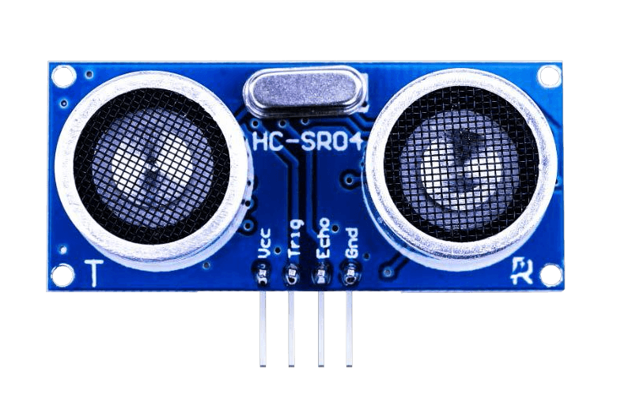
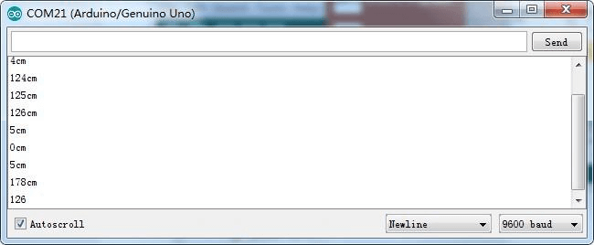

El sensor ultrasónico es un componente ideal para todo tipo de proyectos que necesitan medidas de distancia,
por ejemplo un robot que evita obstáculos.
En este tema aprenderemos a usar el módulo ultrasónico HC-SR04. Es barato y fácil de usar ya que vamos a
usar una biblioteca diseñada específicamente para estos sensores.
(1) x Placa Arduino
(1) x Módulo de sensor ultrasónico HC-SR04
(4) x F M cables (cables de hembra a macho)
El módulo HC-SR04 sensor ultrasónico proporciona una medición sin contacto de una distancia comprendida entre
2 y 400 cm. La precisión varía entorno a los 3 mm. Los módulos incluyen transmisores ultrasónicos, receptor
y circuito de control.

El sensor HC-SR04 es un módulo que incorpora un par de transductores de ultrasonido que se utilizan de manera
conjunta para determinar la distancia del sensor con un objeto colocado enfrente de este.
Un transductor emite una “ráfaga” de ultrasonido y el otro capta el rebote de dicha onda. El tiempo que tarda
la onda sonora en ir y regresar a un objeto puede utilizarse para conocer la distancia que existe entre el
origen del sonido y el objeto.
La interfaz del sensor HC-SR04 y arduino se logra mediante 2 pines digitales: el pin de disparo (trigger) y
el pin de eco (echo). La función de cada uno de estos pines es la siguiente:
- El pin trigger recibe un pulso de habilitación de parte del microcontrolador,
mediante el cual se le indica al módulo que comience a realizar la medición de distancia.
- En el pin echo el sensor devuelve al microcontrolador un puso cuyo ancho es
proporcional al tiempo que tarda el sonido en viajar del transductor al obstáculo y luego de vuelta al
módulo.
Mediante una sencilla formula puede estimarse entonces la distancia entre el sensor y el obstáculo si se
conoce el tiempo de viaje del sonido así como la velocidad de propagación de la onda sonora.
Partimos de la siguiente formula:
Donde Velocidad es la velocidad del sonido (340m/s), tiempo es el tiempo que tarda en llegar el ultrasonido al objeto y regresar al sensor, y la distancia recorrida es dos veces la distancia hacia el objeto.


Cabe aclarar que nosotros hemos utilizado los pines 11 y 12, pero vale cualquier otra combinación de pines.
Es bastante fácil de conectar, solamente tener cuidado con la polaridad y posición de las señales.
Podemos realizarla utilizando un protoboard, o directamente con cables.
Haremos uso de una biblioteca diseñada para estos sensores que hará nuestro código corto y sencillo. Incluimos la biblioteca al principio de nuestro código, y luego mediante simples comandos podemos controlar el comportamiento del sensor. El archivo lo descargaremos de aquí
Una vez efectuado todo el cableado, descargaremos el script del siguiente enlace y lo cargaremos como hemos aprendido.
Vamos ahora a abrir al monitor, para ver los datos que se van recogiendo. Para ello hacemos click en el botón
de Serial Monitor para encender el monitor serie.
Deberíamos tener algo como la
siguiente imagen.

Ya sabemos como funciona básicamente el sensor ultrasónico. El reto consistirá en crear un radar de
velocidad.
Este reto se puede resolver básicamente de dos maneras, y aunque ninguna de ellas funcione exactamente
como un radar de velocidad real, nos devolverán la velocidad de un objeto que se acerque a nuestro radar.
La mayoría de radares funcionan a través de micro ondas que varían su frecuencia al rebotar en un
vehículo según la velocidad a la que vaya, pudiendo calcular por tanto la velocidad real.
Una forma sería utilizar dos detecciones (ultrasónicos, infrarrojos, capacitivos, fotocélulas)
separadas una distancia concreta por las que pasará el coche. Cronometrando el tiempo que pasa entre una
detección y otra, y siendo conocida la distancia, podemos calcular la velocidad. Así funcionan algunos
radares de tramo y de bandas.
La otra manera de resolver el reto del radar con Arduino sería medir cuanta distancia recorre el coche
en un tiempo determinado. Esta es la opción que hemos elegido para resolver el reto.
Mediante un sensor de ultrasonidos tomaremos dos medidas de distancia en un intervalo de tiempo
concreto.
Restando las distancias podemos saber la distancia recorrida en esa décima de segundo y por lo tanto
calcular la velocidad.
Finalmente se muestra la medida en el monitor de serie.